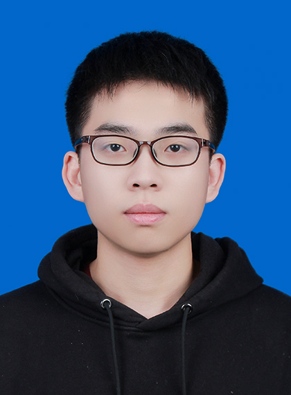

Ke Chen(陈科)
September 2020 admission
Major: Artificial Intelligence
College: Jiluan Academy & School of Information Work
School: Nanchang University
Email: ncukechen@email.ncu.edu.cn Address: Jiluan Academy, Qianhu Campus, Nanchang University, Jiangxi Province, China [Github] [NYSE] [CV] [中文页面]
Major: Artificial Intelligence
College: Jiluan Academy & School of Information Work
School: Nanchang University
Email: ncukechen@email.ncu.edu.cn Address: Jiluan Academy, Qianhu Campus, Nanchang University, Jiangxi Province, China [Github] [NYSE] [CV] [中文页面]

About me
I am currently in my third year of undergraduate studies, and recently I am mainly studying knowledge
independently (including high-performance computing, quantum mechanics), and reading some articles to improve
my horizons. In addition, I also tried to publish teaching articles (blogs) on Zhihu, and some codes and
projects on Github.
Since I am from the computer field, most of my current work is about "classical computers for quantum" (how to optimize quantum computing through classical computing knowledge). Of course, I am also studying more knowledge in the field of quantum computing, and I plan to study more physics-related subjects (such as quantum mechanics, condensed matter physics, etc.). The long-term goal is to design and realize a universal quantum computer by ourselves.
My current research interest: Based on the knowledge background of classical computers, combined with the knowledge of quantum computing, I try to explore a new high-performance architecture (currently only high performance on some problems) - quantum computing to achieve higher computing power , to solve more difficult problems at present.
Currently involved fields: machine learning (deep learning), high performance computing, classical quantum simulator, quantum compilation, quantum machine learning, embedded development.
I personally think that I have good system programming ability, relatively proficient in Python and C++ development languages, and have relatively comprehensive computer-level knowledge (including software and hardware), able to solve problems independently, and also good at solving problems cooperatively
If you have any questions or ideas, welcome to contact me through the above ways.
Scientific research, competitions, projects, technology stacks
By reading the experience described below, you can get a general idea of what knowledge and abilities I have acquired since I went to college. Quantum computing:- (2021/1-2022/5)Learn and reproduce the qubit mapping of the paper "QuCloud: A New Qubit Mapping Mechanism
for Multi-programming Quantum Computing in Cloud Environment" (2021 HPCA).
The beginning of quantum computing, throughout the learning process, have a certain understanding of quantum program mapping and quantum compilation.
Details：Github code，Paper reading summary。 -
(2022/3-2022/5)
In Huawei Hackathon Quantum Algorithm Competition, consider using a heuristic quantum algorithm (QuantumNAS)
to optimize a classical hybrid quantum neural network (variational quantum circuit) for higher image
recognition accuracy.
reference paper：[HPCA'22] Wang et al., "QuantumNAS: Noise-Adaptive Search for Robust Quantum Circuits"
I have done some study and research on quantum algorithms, but I am sorry that I did not sort out the final information. -
（2022/6-now）Participated in the Chinese University of Science and Technology-Quantum Training Course, and is
currently studying further.
study books：Quantum Computation and Quantum Information, Nielsen.
share information：Quantum-training-class-report-materials
Learned a lot of quantum computing knowledge (basic knowledge of quantum mechanics, quantum algorithms, quantum superconducting hardware, quantum simulators, etc.), and met some like-minded people. -
（2022/12-now）I am currently studying the source code of the classical quantum simulator in qiskit, and doing
some tests. I am currently writing some tutorials and plan to publish them on Zhihu.
It is currently being prepared, compared with other quantum simulators, and completed a project (how to design a classical quantum simulator from scratch), which will be open sourced on Github.
-
（2020/12-2022/9）Experience in various mathematical modeling competitions: served as the captain during the
process, mainly responsible for algorithm thinking, programming writing, and assisting in the writing of
papers, and won the highest F award in the competition.
Technical fields: time series prediction (LSTM, existing frameworks), heuristic search algorithms (genetic, particle swarm), reinforcement learning.
Advantages and disadvantages: Can learn knowledge quickly, but cannot form long-term work. - （2021/11）Dream Chasing Cup, transplanting automatic driving algorithms (such as YOLO) on the deep learning chip (TPU), although the final result is not good, but I have a general understanding of the deep learning chip.
-
(2022/1-2022/3) Asian Undergraduate Supercomputing Competition (22ASC), as the team's HPC application
project leader, for the performance analysis and optimization of the molecular dynamics simulation method-deepmd-kit library that won the Gordon Bell
Award.
In the end, I won the second prize. I am mainly responsible for the source code reading and performance testing of deepmd-kit, and the provision and testing of optimization ideas.
Technical field: deep learning (tensorflow), parallel computing (OpenMP, MPI, CUDA, Hadoop distributed training), performance testing (Python program performance analysis), basic knowledge of molecular dynamics simulation. - (2023/2-now) College student supercomputing competition (23SC), as the captain, is currently leading everyone to complete this supercomputing competition.
-
(2021/4-2021/6)For the development of balance bicycles with single-chip microcomputers, I am mainly
responsible for software algorithms, by writing filter functions and balance strategies for hardware.
Technical field: single chip microcomputer (C programming), control algorithm (Kalman filter, PID). -
(2021/9-2021/11)In the flying drone competition, Zhizai passed the writing control algorithm and image
recognition in the preliminary round, and went to Shanghai Jiaotong University for offline physical flight
in the final. In the whole process, I am responsible for code writing and algorithm thinking. In addition, I
also need to adapt the hardware.
Technical field: UAV flight control, path planning, image recognition, ROS robot operating system. -
(2022/11-2022/12)The national FPGA competition needs to adapt CPU and embedded operating system to new FPGA
devices based on RSIC-V. It is mainly responsible for the transplantation of embedded operating systems and
the reading of CPU codes by RISC-V.
Technical field: UAV flight control, path planning, image recognition, ROS robot operating system.
Related information open source github: FPGA_Competition-RISC-V_Processor-in-PGL22G
Honors and Awards
- Third Prize in Mathorcup University Mathematical Modeling Challenge - Big Data Competition in 2020
- Third Prize in the 11th Mathorcup College Mathematical Modeling Challenge in 2021
- 2021 "Shenzhen Cup" Mathematical Modeling Challenge Outstanding Paper Nomination Award.
- "Intelligent Flying" 2021 8th Unmanned Aerial Vehicle Intelligent Perception Technology Competition Third Prize in the Online Simulation Competition of Ruin Scenes
- Provincial First Prize in the National Mathematical Modeling Contest in 2021
- 2022 ASC Student Supercomputer Challenge Second Prize
- Second Prize in the 12th Mathorcup College Mathematical Modeling Challenge in 2022
- 2022 Mathematical Contest In Modeling Finalist Award
- Provincial Second Prize in the National Mathematical Modeling Contest in 2022
Other experience
- During college, he served as a volunteer for the 7th China International "Internet +" College Students Innovation and Entrepreneurship Competition and successfully completed the work of receiving judges.